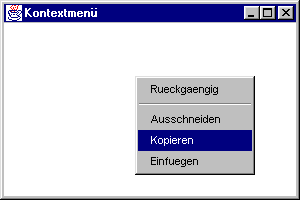

Ein wichtiger Bestandteil grafischer Oberflächen sind die Kontext-
oder Popup-Menüs. Sie liefern auf rechten Mausklick ein
Menü mit den wichtigsten Aktionen, die innerhalb der ausgewählten
Komponente zur Verfügung stehen. Auf diese Weise steht eine Vielzahl
von Funktionen dort zur Verfügung, wo sie benötigt wird,
anstatt umständlich aus dem Hauptmenü des Programms ausgewählt
oder per Kommando eingegeben werden zu müssen.
Auch im AWT gibt es Kontextmenüs, die so funktionieren. Sie werden
durch die Klasse PopupMenu,
die aus Menu
abgeleitet ist, implementiert. PopupMenu
ist genauso zu bedienen wie Menu
und wird daher vor allem mittels geeigneter Aufrufe von add
mit Menüeinträgen bestückt. Diesen kann ein ActionListener
zugeordnet werden, der bei Auslösen des Menüpunkts aufgerufen
wird. Gegenüber der Klasse Menu
besitzt PopupMenu
eine zusätzliche Methode show,
mit der das Kontextmenü angezeigt wird:
Der erste Parameter origin ist
die Komponente, an die das Kontextmenü gebunden wird. Diese Komponente
hat lediglich administrative Aufgaben, spielt aber beim Aufruf des
Kontextmenüs keine Rolle. Die Argumente x
und y geben die Position des
Kontextmenüs relativ zum Ursprung von origin
an.
Um ein Kontextmenü aufzurufen, sind mehrere Dinge zu tun. Zunächst
muss das instanzierte Kontextmenü durch Aufruf von add
an die Komponente gebunden werden, die auf Mausereignisse für
den Aufruf reagieren soll. Dies kann beispielsweise das Fenster sein,
in dem die Komponente untergebracht ist, oder die Komponente selbst.
Anschließend muss in der Komponente durch Aufruf von enableEvents
die Behandlung von Maus-Events freigeschaltet werden. Drittens muss
die Methode processMouseEvent
überlagert werden und es muss bei jedem Mausereignis mit isPopupTrigger
abgefragt werden, ob es sich um das Ereignis zum Aufruf des Kontextmenüs
handelte. In diesem Fall kann das Kontextmenü durch Aufruf von
show
angezeigt werden.
Das folgende Beispiel zeigt ein Programm mit einem Kontextmenü,
das die Punkte »Rückgängig«, »Ausschneiden«,
»Kopieren« und »Einfügen« enthält. Das
Kontextmenü wird an das Hauptfenster gehängt und von Mausereignissen
dieses Fensters aufgerufen. Beim Auslösen einer Option des Kontextmenüs
wird eine entsprechende Meldung auf die Systemkonsole geschrieben.
001 /* Listing3006.java */
002
003 import java.awt.*;
004 import java.awt.event.*;
005
006 class MyPopupMenu
007 extends PopupMenu
008 {
009 public MyPopupMenu(ActionListener listener)
010 {
011 MenuItem mi;
012
013 mi = new MenuItem("Rueckgaengig");
014 mi.addActionListener(listener);
015 add(mi);
016
017 addSeparator();
018
019 mi = new MenuItem("Ausschneiden");
020 mi.addActionListener(listener);
021 add(mi);
022
023 mi = new MenuItem("Kopieren");
024 mi.addActionListener(listener);
025 add(mi);
026
027 mi = new MenuItem("Einfuegen");
028 mi.addActionListener(listener);
029 add(mi);
030 }
031 }
032
033 public class Listing3006
034 extends Frame
035 implements ActionListener
036 {
037 MyPopupMenu popup;
038
039 public static void main(String[] args)
040 {
041 Listing3006 wnd = new Listing3006();
042 }
043
044 public Listing3006()
045 {
046 super("Kontextmenü");
047 setLocation(100,100);
048 setSize(300,200);
049 setVisible(true);
050 addWindowListener(new WindowClosingAdapter(true));
051 //Kontextmenü erzeugen und aktivieren
052 popup = new MyPopupMenu(this);
053 add(popup);
054 enableEvents(AWTEvent.MOUSE_EVENT_MASK);
055 }
056
057 public void processMouseEvent(MouseEvent event)
058 {
059 if (event.isPopupTrigger()) {
060 popup.show(
061 event.getComponent(),
062 event.getX(),
063 event.getY()
064 );
065 }
066 super.processMouseEvent(event);
067 }
068
069 public void actionPerformed(ActionEvent event)
070 {
071 System.out.println(event.getActionCommand());
072 }
073 }
|
Listing3006.java |
Listing 30.6: Einbinden eines Kontextmenüs im AWT
Abbildung 30.4 zeigt
den Aufruf des Kontextmenüs:

Abbildung 30.4: Aufruf eines Kontextmenüs